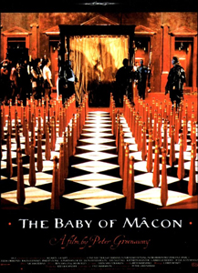
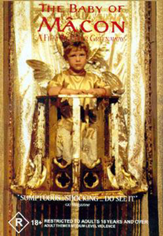
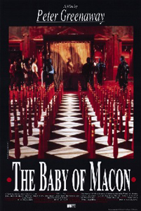
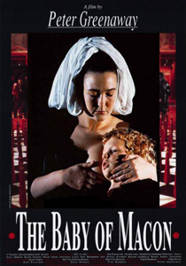
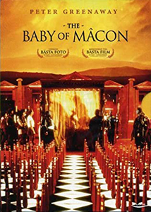
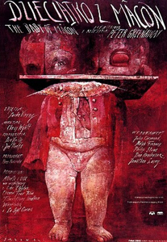

The film is set in France during the mid-17th century, in the court of Cosimo III de' Medici as he and his court watch actors perform a parable about a baby born in the town of Mâcon whose inhabitants have been infertile for a generation. The birth of the baby boy is mythologised for various ends, initially because it marks the end of childlessness in a city. The film premiered at the 1993 Cannes Film Festival. Because of the many scenes of nudity and the graphic scenes of violence the film struggled to find distribution.
The Daughter
The Bishop
The Father Confessor
The Majordomo
The Second Midwife



The film was partially inspired by an uproar surrounding an advertising campaign that featured a newborn baby still attached to its umbilical cord. Greenaway was perplexed by the public’s reaction, and set out to create an unflinching depiction of the actual evils of murder and rape.
The Catholic Church revoked permission for the film crew to shoot in the Cologne Cathedral after Greenaway’s earlier film, The Cook, the Thief, his Wife & her Lover, aired on German television two days before shooting was to begin.
The Baby of Mâcon premiered at Cannes, but was seldom seen after that. Although it booked some dates in Europe, no North American distributor would agree to take on the film due to its subject matter. To this day it has still not been released on physical media in Region 1/A, although it finally became available for streaming in the 2020s.


